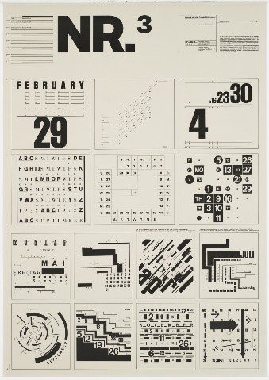
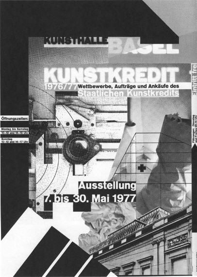
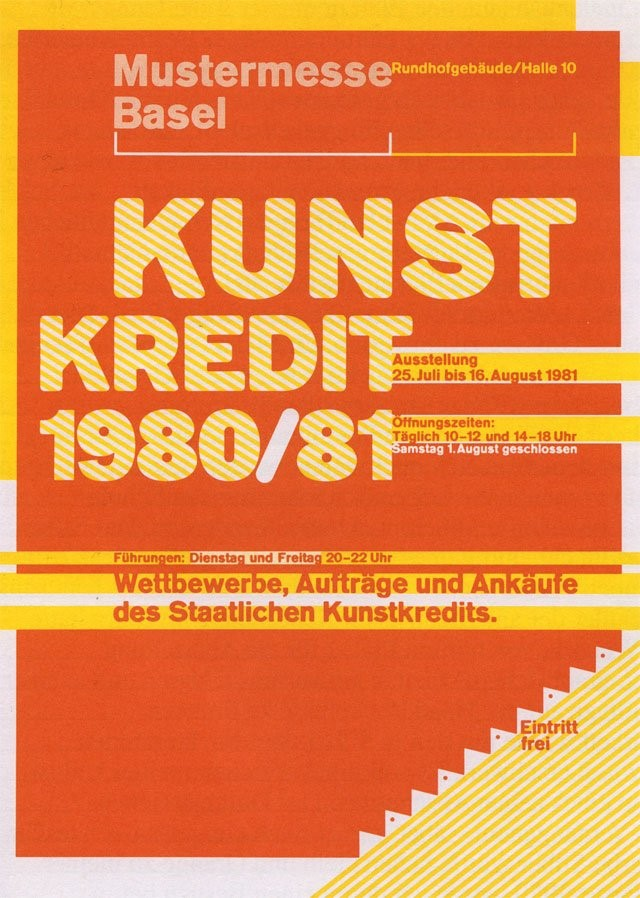

Wolfgang Weingart
The Father of the New Wave Typegraphy
By Matthew Grissam

- Introduction -
Wolfgang Weingart, often referred to as
- History -
Wolfgang Weingart is a Graphic Designer and Typographer born in German in 1941. In 1958 at the age of 17 he went to applied art and design in a 2-year program at the Merz Academy in Stuttgart, while there he discovered the schools printing facilities and at the age of 17 did his first hot metal type. He also learned other mediums of typesetting, linocut and woodblock printing. After successfully completing the 2-year program Wolfgang then completed a 3-year long apprenticeship in hot metal hand composition. It is here he met companies consulting designer, Karl-August Hanke, whom would become his mentor and encouraged Weingart to study in Switzerland. Karl-August Hanke was a past student of the Basel School of Design, and while mentoring Weingart, he introduced him to design outside of Germany more particularly in Switzerland.
Weingart met Emil Ruder and Armin Hofmann in Basel in 1963 thanks to Karl-August Hanke. And in the following year Weingart moved to Switzerland and enrolling in the Basel School of Design as an independent student. Later in 1968 Weingart was invited by Armin Hofmann to teach typography at the Schools newly established ‘Kunstgewerbeschule’ which where a type of vocational arts school that existed in German-speaking countries from the mid-19th century. Weingart would come to find himself in the company of designers who were not as focused on the Swiss-style principles in their work and these stylistic choices would ultimately greatly influence Weingart, who would become one of the first designers to abandon the strict principles that had influenced Swiss design for decades. And in 1974 at Armin Hofmann invitation again, Weingart would go to teach at the Yale summer program in Graphic Design in Brissago, Switzerland until 1996. For over forty years he has lectured and taught extensively in Europe, North and South America and the rest of the world.

- Weingart Style -
“I took 'Swiss Typography' as my starting point, but then I blew it apart, never forcing any style upon my students. I never intended to create a 'style'. It just happened that the students picked up—and misinterpreted—a so-called 'Weingart style' and spread it around.” – Wolfgang Weingart when interviewed by Yvonne Schwemer-Scheddin (1991)
Weingart had influenced a generation of typographers who exported his ideas to America and the world. This so-called style is sometimes referred to as the ‘Weingart Style’, Weingart is known to be a rebellious person when it comes to Designing. He has liked to push the limits on what would be considered the norm. From an early stage in his education he had broke the typographic rules swaying from the strict rules of the Swiss-style to being free with his spacing, and overall layout and organisation of the typesetting. Weingart believed that the old Swiss-style was becoming stagnant, it was boring and anonymous. Thus, Weingart would set out to breathe new life in the world of teaching typography, a new typography. He believed that only way of breaking the rules that had held typographic was to know them well, this was an advantage he had learnt from his 3-years as an apprentice. Weingart encouraged his students to think outside the box and experiment with their basic design relations such as size and weight, but he also encouraged them to experiment with the spacing between letters. The goal was to simple, to test the limits of readability. He allowed his students to have the freedom to experiment in ways to enhance and intensify their meanings and impact.
- Weingart's Works -

Wolfgang Weingart is internationally recognised for his iconic work in the field of graphic design, Wolfgang has honed his craft when pushing the limits of typographic and to what is now referred to as the ‘New Wave’/’Swiss Punk’. The biggest noticeable difference between Weingarts work and the New Wave from the old strict Swiss-style is the constant use of characteristics such as inconsistent letterspacing, varying type weights within in single words and the type set as varying angles.

What I love about Weingarts work, is the way he plays with the letter spacing. Especially in this piece of work here where he literally has the letters joined to create shapes. You can clearly spot out the letters used in these which shows the piece is still legible which was Weingarts intent. Another thing I love about these posters is how they are laid out; they all follow a shared designed as a series.
This piece was the previous iteration of the series, looking at the layout of a calendar text structure. The piece once again is laid out wonderfully, with every grid equally spaced and with the base background although probably not intentionally the original colour although it still compliments the black text.
This piece was created in 1976-77 and it was created to promote an exhibition at the Basel school. It was a Black and white poster. The design was composed of a collage effect of text, shapes and photographic images of architecture and what looks like objects. The building in seen the image is presumably the site of the exhibition.
An example of Weingarts work but in colour, this piece again promoting an exhibition at the same location, but it is in the year 1980-81. What I love about this piece especially is the colour, using yellow and orange as the main colours while using tones of each for secondary colours such as the colour used for ‘Mustermesse Basel’. The text is actually the background with the angled lines running through them to make them stand out. Another reason why I like Weingarts work and this piece in particular is because of the lines he uses extensively, either for setting text upon or to just further enhance the overall aesthetic of the piece.
- Impact -
Post-Modern typographic style had emerged as a reaction against the Swiss Style and its rigid grid. In Post-Modernist designs, the grid was used more flexibly to create more complex and decorative designs. The Post-Modernist designers never fully rejected the grid, but they certainly pushed its limits. Probably the most well-known rule of typography is to use a grid when designing. But as Weingart has showed us, pushing the boundaries or even going over the boundaries of the rules can lead to great designs, if it is done right. Graphic Designers have continued to push the boundaries of the grid with styles like Punk, New Wave and Digital Expressionism. Some have rejected using the grid all together, others have kept the grid, but they have pushed it to the boundaries. Even in postmodern designs you still can see that the designers used the grid as a starting off point, but then breaking free from it to achieve a more energetic and dynamic effect in their designs. Weingart gave a lecture tour on the topic in the 1970s which increased the number of American Graphic Designers who travelled to the Basel School for postgraduate training, these Graphic Designers and students, would take the New Wave Typography into the future. One of these American Graphic Designers ‘April Greiman’ was taught by Weingart, she would go on to become one of the first Graphic Designers to embrace computers. The New Wave Typography is still visible in her work even after switching to work in the digital world.

- Conclusion -
Do I feel that Wolfgang Weingart deserves the title of ‘Father of the New Wave Typography’? Yes, mainly because Weingart was the man who propelled this new and radical way of Typography into the limelight. He was not the first man to experiment with this style though, as these similar practices where already being experimented by the very Designers, he found himself surrounded by while teaching at the Basel School of Design and the Kunstgewerbeschule. I feel the obvious reason on how Weingart got the title was from his tour of lectures he hosted across the world, exposing Designers across the globe to this new way of typography. But I also feel because of his work he also earned the title; he was the one who took what was already being experimented on by his peers at the Basel School and he pushed it even further. This was at a time when methods like this where not even thought of by majority. Weingart was almost like the intermediary between the new ways of Typography and Designers around the world, he taught these new ways and inspired many to play and challenge the typographic grid. But thinking back to the start of it all, we have to remember Karl-August Hanke, the person who introduced Weingart to the world of typography outside of Germany. Where it not for his actions we may never of seen a ‘Weingart Style’ nor would Wolfgang of propelled this new form of typography out to the wider world.
- Biblography -
| Creger, R. (2013). 11 Techniques for breaking the typographic grid. [online] Available at: https://99designs.co.uk/blog/tips/11-techniques-for-breaking-the-typographic-grid/ [Accessed 2020]. |
|---|
| Burton, P. (2013). Wolfgang Weingart. [online] Available at: https://www.aiga.org/medalist-wolfgang-weingart [Accessed 2020]. |
| Schwemer-Scheddin, Y. (1991). Reputations: Wolfgang Weingart [online] Available at:http://www.eyemagazine.com/feature/article/reputations-wolfgang-weingart [Accessed 2020]. |
| Wikipedia. (2010). Basel School of Design [online] Available at: https://en.wikipedia.org/wiki/Schule_f%C3%BCr_Gestaltung_Basel [Accessed 2020]. |
| Wikipedia. (2007). Wolfgang Weingart [online] Available at:https://en.wikipedia.org/wiki/Wolfgang_Weingart [Accessed 2020]. |